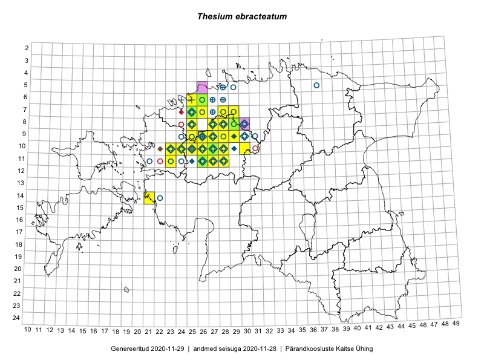

Thesium ebracteatum
Uuendatud: 2016-12-07
Kaardile koondatud taksonid: Thesium ebracteatum Hayne

Kaart põhineb 41 vaatlusel. Taime on leitud 16 ruudust.
| Ruut | Vaatleja(d) | Vaatlusaeg | Kirje tüüp | Viide andmebaasikirjele |
|---|---|---|---|---|
| 11-26 | Aat Sarv | 2015-07-21 | ruut/ala | vaata PlutoFis |
| 10-25 | Aat Sarv | 2015-05-31 | ruut/ala | vaata PlutoFis |
| 10-25 | Aat Sarv | 2015-05-31 | ruut/ala | vaata PlutoFis |
| 10-26 | Aat Sarv | 2015-07-22 | ruut/ala | vaata PlutoFis |
| 11-26 | Aat Sarv | 2015-05-31 | ruut/ala | vaata PlutoFis |
| 08-25 | Mari Metsoja, Jaak-Albert Metsoja | 2015-05-31 | ruut/ala | vaata PlutoFis |
| 10-26 | Peedu Saar, Rein Kalamees, Kersti Püssa | 2014-06-12 | ruut/ala | vaata PlutoFis |
| 10-26 | Kersti Püssa, Peedu Saar, Rein Kalamees | 2014-06-12 | punkt | vaata PlutoFis |
| 10-26 | Kersti Püssa, Peedu Saar, Rein Kalamees | 2014-06-12 | punkt | vaata PlutoFis |
| 10-27 | Peedu Saar, Ott Luuk, Meeli Mesipuu, Thea Kull, Kersti Püssa, Rein Kalamees, Toomas Kukk | 2014-06-10 | ruut/ala | vaata PlutoFis |
| 09-28 | Aat Sarv | 2015-08-27 | ruut/ala | vaata PlutoFis |
| 10-25 | Ott Luuk, Jaak-Albert Metsoja, Maret Gerz | 2014-06-11 | ruut/ala | vaata PlutoFis |
| 10-26 | Jaak-Albert Metsoja, Ott Luuk, Maret Gerz | 2014-06-11 | ruut/ala | vaata PlutoFis |
| 10-24 | Hanna-Eliisa Luts, Tõnu Ploompuu, Anna-Grete Rebane | 2015-07-19 | ruut/ala | vaata PlutoFis |
| 11-28 | Aat Sarv | 2015-05-26 | ruut/ala | vaata PlutoFis |
| 11-27 | Aat Sarv | 2015-05-26 | ruut/ala | vaata PlutoFis |
| 09-27 | Aat Sarv | 2015-05-15 | ruut/ala | vaata PlutoFis |
| 08-27 | Aat Sarv | 2015-07-23 | ruut/ala | vaata PlutoFis |
| 08-28 | Aat Sarv | 2015-05-10 | ruut/ala | vaata PlutoFis |
| 10-27 | Aat Sarv | 2015-05-15 | ruut/ala | vaata PlutoFis |
| 14-21 | Peedu Saar, Toomas Kukk | 2016-05-14 | punkt | vaata PlutoFis |
| 11-26 | Ott Luuk, Tiit Hallikma | 2016-05-12 | ruut/ala | vaata PlutoFis |
| 14-21 | Toomas Kukk, Peedu Saar | 2016-05-14 | ruut/ala | vaata PlutoFis |
| 10-24 | Ott Luuk, Tiit Hallikma | 2016-05-12 | ruut/ala | vaata PlutoFis |
| 08-29 | Thea Kull, Ott Luuk | 2016-05-30 | ruut/ala | vaata PlutoFis |
| 10-24 | Tiit Hallikma, Ott Luuk | 2016-05-12 | punkt | vaata PlutoFis |
| 11-26 | Tiit Hallikma, Ott Luuk | 2016-05-12 | punkt | vaata PlutoFis |
| 07-28 | Meeli Mesipuu, Thea Kull | 2016-06-02 | ruut/ala | vaata PlutoFis |
| 07-28 | Thea Kull, Meeli Mesipuu | 2016-06-02 | punkt | vaata PlutoFis |
| 07-28 | Thea Kull, Meeli Mesipuu | 2016-06-02 | punkt | vaata PlutoFis |
| 10-30 | Erkki Otsman, Sergei Smirnov | 2016-07-25 | ruut/ala | vaata PlutoFis |
| 11-26 | Ott Luuk, Peedu Saar | 2016-09-05 | punkt | vaata PlutoFis |
| 10-26 | Ott Luuk, Peedu Saar | 2016-09-05 | punkt | vaata PlutoFis |
| 10-25 | Ott Luuk, Peedu Saar | 2016-09-05 | punkt | vaata PlutoFis |
| 10-25 | Ott Luuk, Peedu Saar | 2016-09-05 | punkt | vaata PlutoFis |
| 10-25 | Ott Luuk, Peedu Saar | 2016-09-05 | punkt | vaata PlutoFis |
| 10-25 | Ott Luuk, Peedu Saar | 2016-09-05 | punkt | vaata PlutoFis |
| 08-29 | Ott Luuk, Thea Kull | 2016-05-30 | ruut/ala | vaata PlutoFis |
| 08-25 | Jaak-Albert Metsoja, Mari Metsoja | 2015-05-31 | punkt | vaata PlutoFis |
| 08-25 | Jaak-Albert Metsoja, Mari Metsoja | 2015-05-31 | punkt | vaata PlutoFis |
| 08-25 | Jaak-Albert Metsoja, Mari Metsoja | 2015-05-31 | punkt | vaata PlutoFis |